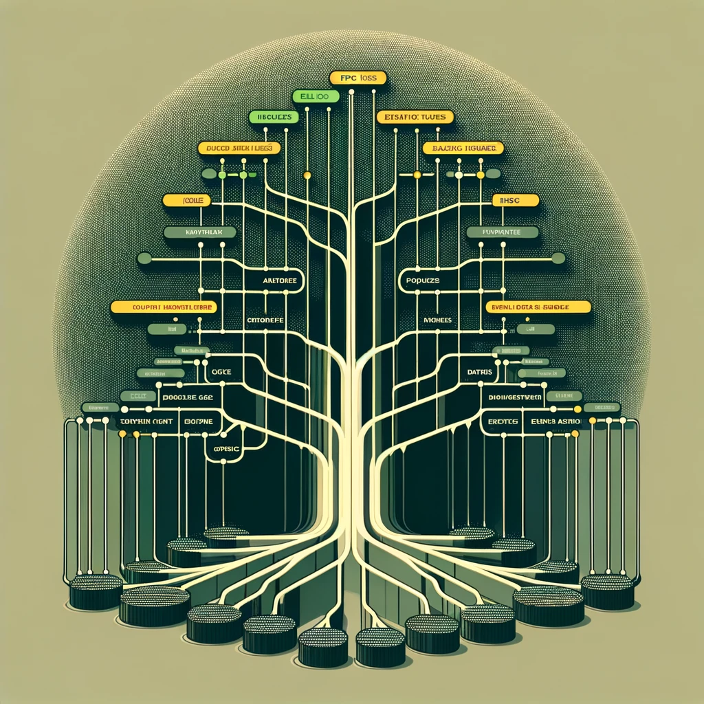
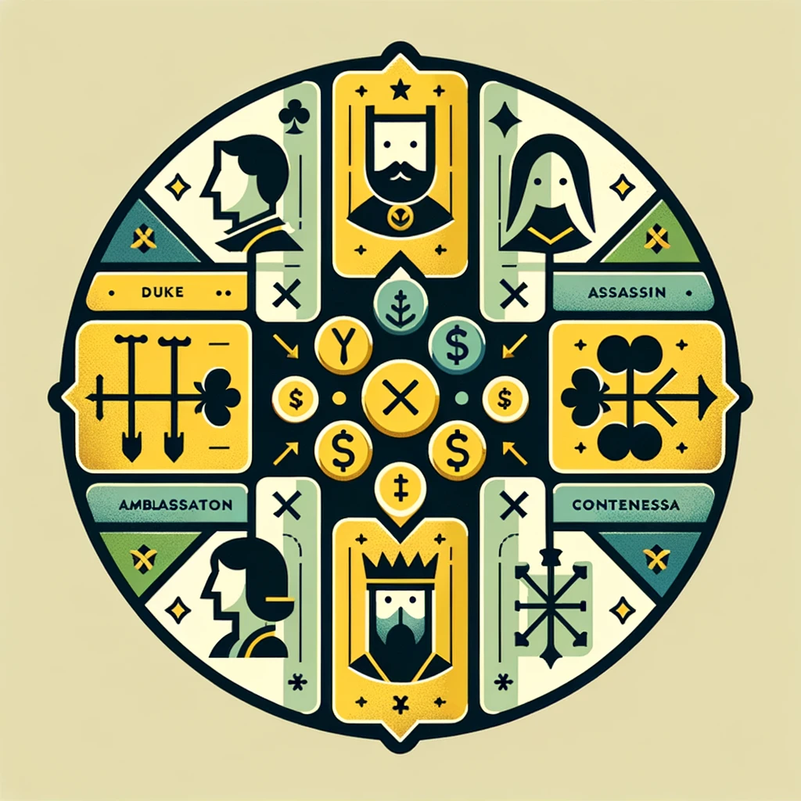

2023
|  |
Issue Hieararchy Construction
In most repositories, issues of a project are not organized. We aimed to create a hierarchical structure of the issues to ease the development process. [github] |
|  |
Coup Board Game Reinforcement Learning
Started with an earlier project done by Ryan Campbell and experimented with different methods to improve the performance of the agent. Mainly focused on self-play. [github] |
|
Turkish Poetry Generation with Transformers
A project to generate Turkish poetry using transformer models. It was a good exercise to implement transformer models from scratch. But the generation capability of the model was not great. Our dataset is scraped from antoloji.com and contains around 120000 poems. [github] |